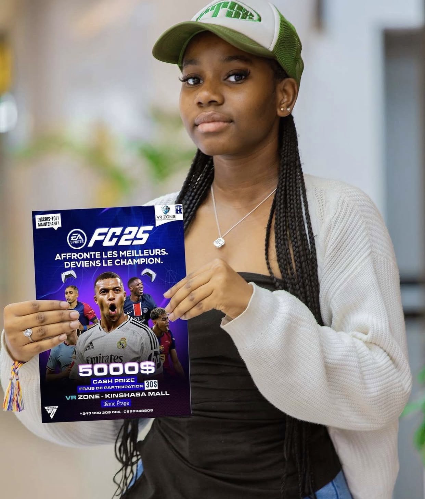
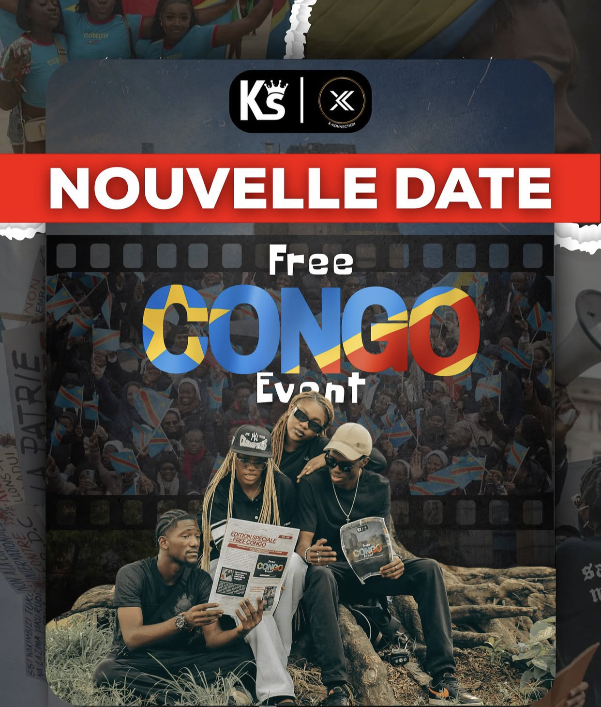

À la une : Mboka Vibes 2025
Le festival incontournable de la jeunesse congolaise – 28 juin à Kinshasa
Voir détailsProchains événements

C2B TODJALI OU BIEN???!!! 2025
Une immersion dans la créativité des jeunes artistes – 21 juin 2025
Voir détails

Tournois Fifa 2025
Une immersion dans la créativité des jeunes artistes – 15 juillet 2025
Voir détails

FREE CONGO EVENT
UN CRI POUR LA PAIX À L'EST
Le Free Congo Event est un rassemblement artistique, culturel et citoyen au service d’une cause noble : mettre en lumière l’instabilité et les souffrances vécues à l’Est de la République Démocratique du Congo.
Pourquoi choisir KinEvents ?
- Événements à jour et 100% jeunes
- Localisations précises sur Google Maps
- Communauté engagée et dynamique
- Événements triés sur le volet
- Site optimisé pour mobile